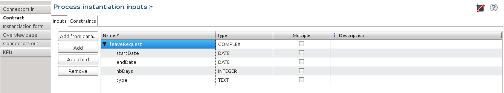
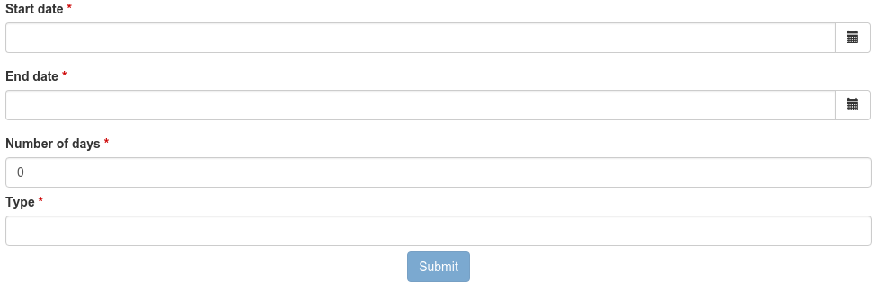
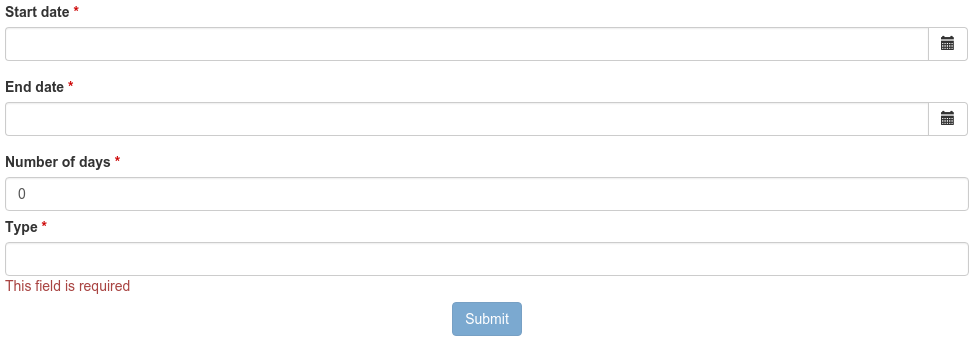
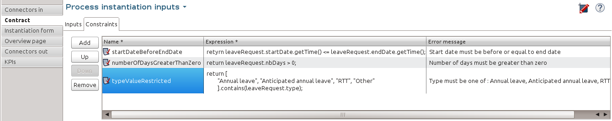

How to control and validate forms in the UI Designer
Using a leave request management process example, you will learn how to take advantage of forms in the UI Designer and how to add validation for the data to submit.
Prologue
You will design a simple leave request management process using Bonita BPM 7 and beyond:
First things first, draw the wireframe of the process. In Bonita BPM Studio, since the instantiation of a new leave request happens at pool level, add a simple validation task, rename the pool Leave request management, and rename the lane manager, as shown here:

Then, define a business object that will hold the leave requests data when the process instances are ongoing, and store it when the instances are archived: In Bonita BPM Studio menu, go to Development > Business Data Model > Manage option, and add a business object named LeaveRequest, with 4 attributes:
- startDate: first working day taken as vacation
- endDate: last working day taken as vacation
- nbDays: number of working days taken as vacation
- type: leave type (annual leave, anticipated leave,…)
To allow this business object to be instantiated in each process instance, create a business variable in the process: At pool level, in the Data panel, define a business variable named leaveRequest. For business object, choose LeaveRequest.
Then, to make sure the process gets the information it needs to start a new instance, create a contract: In the Execution pane > Contract tab, click the Add from data… button to generate the contract input from an existing business variable. Choose the Business variable option, and the leaveRequest variable. A complex contract input is created, mapped on the leaveRequest business variable.
Each entry of the contract is bound to a business object property:
- startDate as a DATE
- endDate as a DATE
- nbDays as an INTEGER
- type as TEXT
… as shown here:

You can also add constraints on the contract inputs in the Constraints tab.
For more information about process, business data management and contract, check out Designing Efficient BPM Applications: A Process-Based Guide for Beginners.
To generate an instantiation form that complies with the contract (where the user will start a new request), go to the Instantiation Form tab, and click on the pen icon. This will take you to an open form in the UI Designer. By default, this form contains a form container with 4 widgets matching the contract:
- a date picker widget for the start date
- a date picker widget for the end date
- an input widget expecting a number for the number of days
- an input widget expecting text for the type
… as shown here:

You can check what it will look like once deployed by clicking on Preview, as shown here:

Basic contract validation and constraints
You can notice that:
- Every field label is followed with a red star showing that those fields are required (by the contract).
- The Submit button is disabled until all fields marked as required are filled.
If one of the input constraints is invalid, an error message is displayed below the input field. In the example, the only input constraint is required, so an error message is displayed if you edit and reset a field, as shown here:

Once all fields have values, the form can be submitted, the contract validated by the process, and the new process instance can be started.
Advanced contract validation and constraints
More visible information of invalid inputs
Now, to alert the user that an input is not valid with a red border around invalid inputs, you must use the AngularJS form control properties.
AngularJS $form
Inside a form container, AngularJS provides a special variable called $form.
This variable holds the validation state of the inputs, selects and textareas of the current form container.
Here is an extract from the AngularJS documentation site that explains the purpose of this feature.
From an AngularJS point of view, a form is a collection of controls for the purpose of grouping related controls together.
Form and controls provide validation services, so that the user can be notified of invalid input before submitting a form. This provides a better user experience than server-side validation alone because the user gets instant feedback on how to correct the error.
A control in AngularJS exposes properties for a given input, select or textarea and associates it with a CSS class:
- $dirty (CSS class ng-dirty): the control has been interacted with
- $pristine (CSS class ng-pristine): the control hasn’t been interacted with yet
- $valid (CSS class ng-valid): the model is valid
- $invalid (CSS class ng-invalid): the model is invalid
Note: In this example, we will only focus on these properties. More properties and information about form control is available on AngularJS form guide.
AngularJS sets these different CSS classes on HTML input elements depending on their states.
Using AngularJS form control CSS classes
Note: A tutorial about creating modal windows using CSS in the UI Designer is available. We recommend to read it before you go further in this tutorial.
So, to alert users about the invalidity of inputs they just edited, you need to use ng-invalid and ng-dirty classes on those elements:
In your favorite editor, create a validationStyle.css file containing the class below:
.ng-invalid.ng-dirty {
border-color: red;
outline: 0;
-webkit-box-shadow: inset 0 1px 1px rgba(0,0,0,.075),0 0 8px rgba(233,175,102,.6);
box-shadow: inset 0 1px 1px rgba(0,0,0,.075),0 0 8px rgba(233,175,102,.6);
}
Using only the ng-invalid class makes red border appear even before the user enters a value for the input and that is annoying. Then, in the form Assets panel at the bottom, click Add and add the CSS file. In the same way, to show the user which inputs are valid, edit the CSS file to add:
.ng-valid {
border-color: green;
outline: 0;
-webkit-box-shadow: inset 0 1px 1px rgba(0,0,0,.075),0 0 4px rgba(102,233,102,.6);
box-shadow: inset 0 1px 1px rgba(0,0,0,.075),0 0 4px rgba(102,233,102,.6);
}
In the UI Designer preview, the form looks like it is shown here:

Note: The properties of the form controls also apply to the $form variable.
So in this case, the $form variable has the properties $invalid, $valid, $pristine and $dirty dependending on the value of each of its controls: if one of the controls has a property set to true then the $form matching property is set to true.
Therefore, the HTML form element has the associated ng-pristine, ng-dirty, ng-valid and ng-invalid classes set whether the $form properties are true or false.
Since the HTML form element has no border, the CSS classes added have no impact on it.
Error summary panel (SP only)
For debug purposes, you can add a panel at the top of the form to list all errors in the form: From the UI Designer home page, create a fragment. Set errorPanel as the fragment name. In the Variable panel at the bottom, create one variable, of type exposed: yes, called errors. Create two other variables, of type exposed: no:
- errorRequired: it allows to tell if in the form, some required data are missing.
- errorDate: it allows to tell if in the form, some dates are invalid.
These two variables are instantiated with JavaScript expressions using $form.$error. Therefore, for Type, select JavaScript expression. For errorRequired , enter the following Value:
return ($data.errors.required || []).filter(function(field){
return field.$dirty;
}).map(function(field){
return field.$name;
});
And for errorDate, enter:
return ($data.errors.date || []).map(function(field){
return field.$name;
});
The errorRequired is a bit different from errorDate because when the form is empty, the user doesn’t need to be reminded that some fields are empty. This is why it contains a filter to only display the errors on dirty fields (i.e. which have been edited).
These two variables will contain the list of invalid widget names. Currently, these widget names are not usable directly because they are automatically generated. Therefore, from the palette on the left, drag and drop two text widgets in this fragment whiteboard, with the following text:
- Some required data is missing.
- Some dates are invalid.
To put the text and the background in red, add the bootstrap’s text-danger and bg-danger CSS classes in the CSS classes property for both widgets. To hide these fields when no error are detected, go to the Hide property of each widget, click on f(x) to make them evaluated as expressions, and add respectively:
-
_!errorRequired errorRequired.length === 0_ -
_!errorDate errorDate.length === 0_
… as shown here:


Then, to change the default style of the p html tag and have a little more margin, open the validationStyle.css file and add the following:
.text-danger p {
margin: 1em;
}
Go back to the home page, and then open the leave request form again.
From the palette, change the title widget at the top of the form. In the text property, write Leave request.
In the palette on the left, select Fragments, and then drag and drop the fragment just created below the form title, as shown here (from the preview):

Use a select widget for the leave type
The user usually selects one option of leave type and does not type free text. A predefined list of such values could be:
- Annual leave
- Anticipated annual leave
- Unpaid
- Other
To implement such a list, remove the generated input widget for type and add a select widget with the following properties:
- Label: Type
- Required: yes
- Placeholder: type
- Available values: Annual leave, Anticipated annual leave, Unpaid, Other
- Value: formOutput.typeContract
Custom validation
Use contract response for server side validation
At this stage, you have added some simple control over the different inputs. You will now learn about more advanced validation checks. For example, let’s express those three rules:
- The start date must be earlier or the same than the end date
- The number of days must be greater than zero
- The leave type must be one of Annual leave, Anticipated annual leave, Unpaid, or Other.
For the second requirement, you have already set a control on the input
For the last requirement: you have already changed the widget type from input to select.
Therefore, on those two fields, a user cannot submit wrong data.
However, keep in mind that while client-side validation plays an important role in providing a good user experience, it can easily be circumvented and therefore can not be trusted. Server-side validation is still necessary for a secure application.
For this reason, we need to add some constraints to the contract, process side, one for each rule.
Go back to the Studio, and at pool level, go to the Execution pane > Contract > Constraints tabs to define the constraints as shown here:

The server error response message on submit when one of the constraints fails has an explanations attribute.
This attribute is an array of the error message of each constraint that has failed.
On the UI Designer side, you need to catch the error response message on submit: Go to the form Variable panel, and create a new variable called instantiationErrorResponse. Then select the Submit button and in its Failed response value property, type instantiationErrorResponse.
Now you need to display each error message in red in the form. To do so, you need to create an iteration on the explanations messages.
From the palette, drag and drop a Container just below the form title. In its Collection property, type instantiationErrorResponse.explanations .
Inside this container, add a text widget. In its CSS classes property, type text-danger and bg-danger and in its text property, type __.
Now go back to the studio and run the process to test the form error messages on submit.
Setting a start date older than an end date will produce the following screen (given that other fields are set correctly):

Use frontend validation
Let’s add two more constraints to the leave request form :
- nbDays must be more than 0 and less than a value retrieved externally (number of days the user has left)
- type with value Other displays a comment field limited to 100 characters (the Human Resources officer needs to know what type of leave this is)
Number input value control
To help the user to fill out the form and tell him/her the number of days is valid according to the amount of days left, create a new variable remainDays. It will provide the number of days left for the leave type Annual leave.
In real life, it should be of type External API.
For the sake of this turotial, just make it a JSON variable to test our form.
The value is:
{
"Personal leave": 2,
"Annual leave": 12
}
Then, on the Number of days input widget, set the Min value property to 0.5 and set the Max value property to remaingDays[formInput.leaveRequest.type].
Doing this allows to validate the number of days value according to the leave type.

Change the inputs order to give the form a more more natural flow (type before number of days).
The form control of the number days input widget now exposes two new CSS classes for the validity of the input : ng-invalid-min and ng-invalid-max. In the same way, the $error will hold the attributes min and max when value is below minimum value or above maximum value respectively.
On the form, if you set a wrong input in the number of days after setting the type to Personal Leave, it looks like this:

Text input value control
Now assume that in the studio Business Data Model, a new comment attribute has been added to the business object LeaveRequest with a matching contract input comment. This comment must be filled when the leave type is Other.
To display this comment, add a textarea widget to the right of the type widget.
To only display the widget when the type Other is selected, change the Hidden property of this textarea to an expression (click f(x)) and set it to formInput.leaveRequest.type !== 'Other'
To make it required when it is displayed, change the Required property to an expression and set it to formInput.leaveRequest.type === 'Other'
In the Label property, type Comment and in the Value property, type formInput.leaveRequest.comment, as shown here:.

To compell the user to enter a text that will be the right size, add some form control on this widget by setting values to 5 to Value min length and 100 to Value max length.
The form control of the comment textarea widget now exposes two new CSS classes for the validity of the input: ng-invalid-minlength and ng-invalid-maxlength.
In the same way, the $error will hold the attribute minlength and maxlength when the text length is below minimum length or above maximum length respectively.
Run your process and test your form with an incorrect comment size; it will look like this: